Tradição e qualidade em estofados em Londrina
Há 30 anos a Tapeçaria Gonçalves fabrica e comercializa móveis estofados com qualidade e conforto para deixar seu ambiente decorado e aconchegante. Conheça os nossos serviços e faça um orçamento sem compromisso.
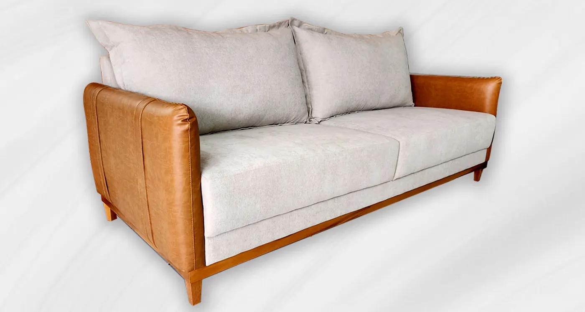
O que reformamos
Atuando há 30 anos em Londrina no ramo de móveis estofados, a empresa é especializada em fabricação e reforma de:
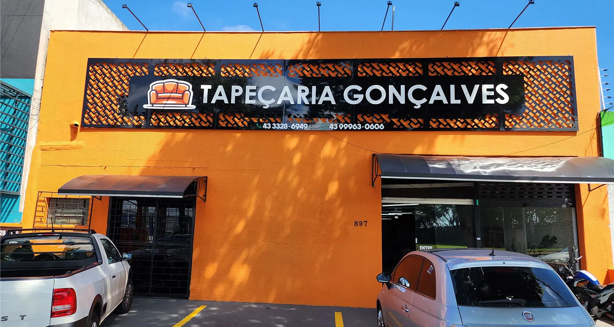
Trabalhos executados
Várias opções em estofados reclináveis e retráteis. Modelos de 2 e 3 lugares, sofá de canto e sofá com chaise, com variedade de cores, estampas e tecidos.
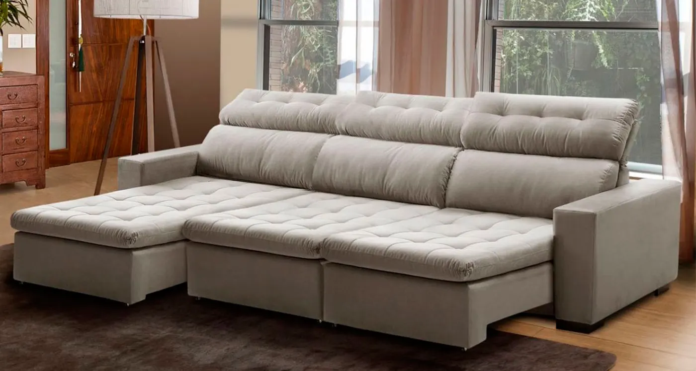
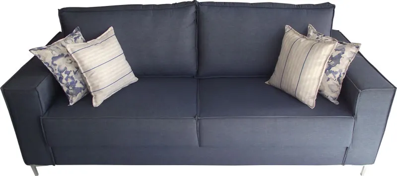
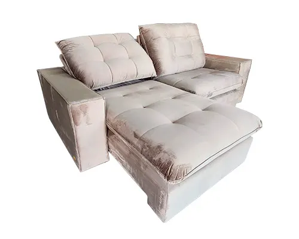
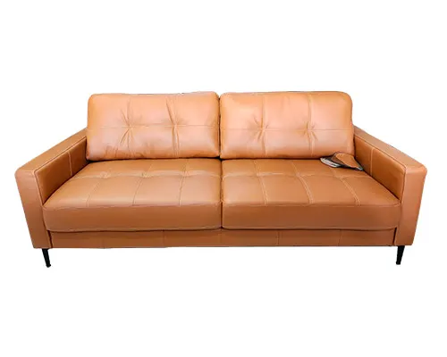
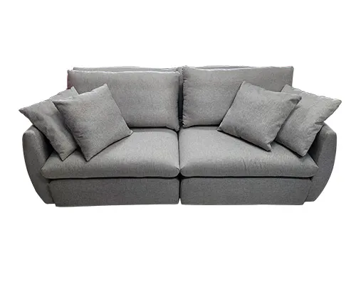
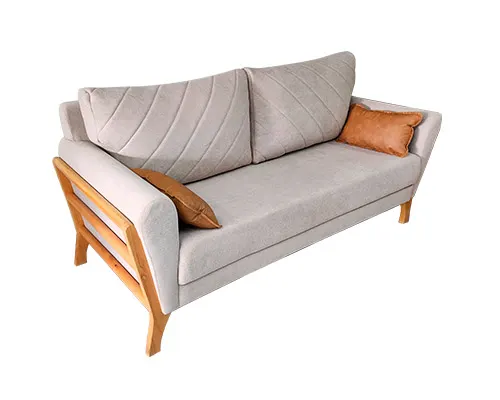
Poltronas tradicionais e decorativas — modelos decorativa, reclinável, amamentação e capitonê, com variedade de cores, estampas e tecidos.
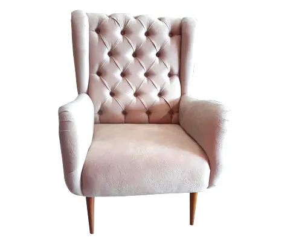
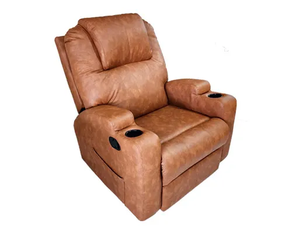
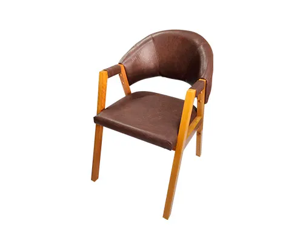
Cabeceiras para decorar a cama, em formas geométricas e capitonê.
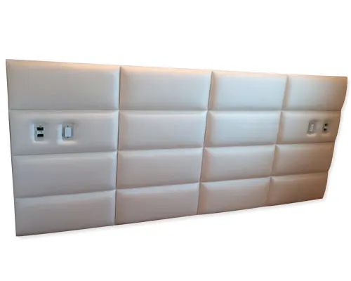
Tecido e acabamento
Oferecemos qualidade, eficiência e rapidez, com grande variedade de cores e tecidos no nosso mostruário.
Nos puffs, modelos patchwork, baú, pés palito, banqueta, quadrado, redondo e capitonê — e nas almofadas, variedade de cores, estampas, modelos e tecidos.
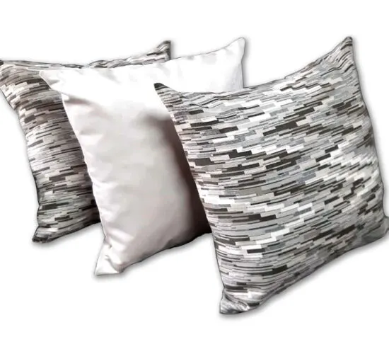
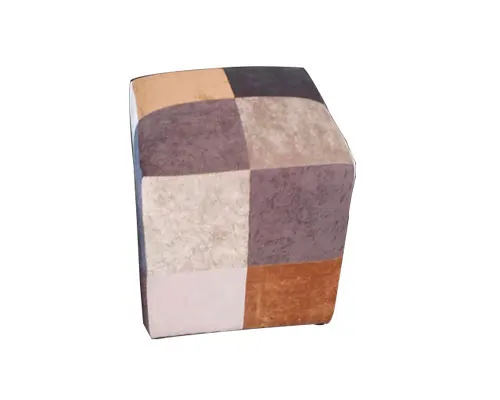
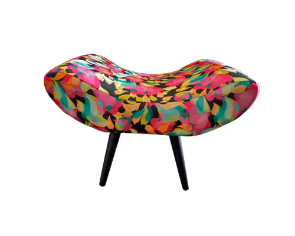
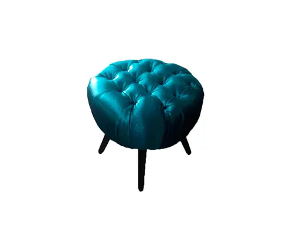
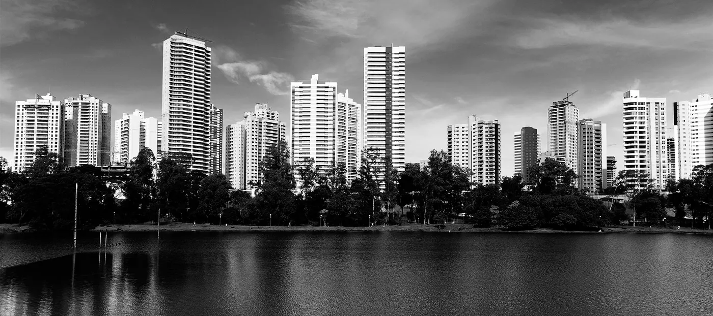
Contato
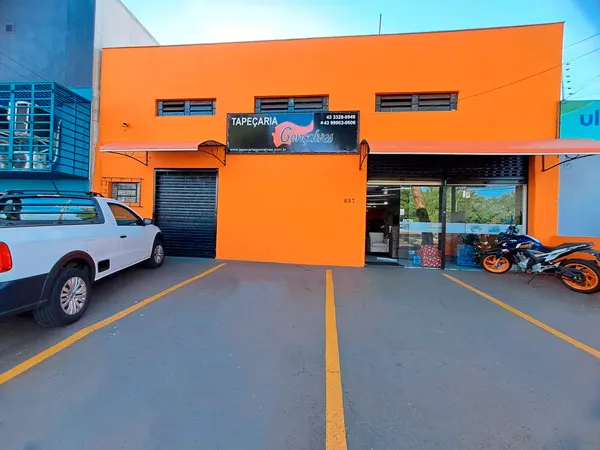